Chapter 1: Introduction to organic structure and bonding, part I
Contents
Chapter 1: Introduction to organic structure and bonding, part I#

Figure : Habanero peppers
Habanero peppers
(credit: https://www.flickr.com/photos/jeffreyww/)
It’s a hot August evening at a park in the middle of North Hudson, Wisconsin, a village of just under 4000 people on the St. Croix river in the western edge of the state. A line of people are seated at tables set up inside a canvas tent. In front of a cheering crowd of friends, family, and neighbors, these brave souls are about to do battle . . .with a fruit plate.
Unfortunately for the contestants, the fruit in question is the habanero, one of the hotter varieties of chili pepper commonly found in markets in North America. In this particular event, teams of five people will race to be the first to eat a full pound of peppers. As the eating begins, all seems well at first. Within thirty seconds, though, what begins to happen is completely predictable and understandable to anyone who has ever mistakenly poured a little to much hot sauce on the dinner plate. Faces turn red, sweat and tears begin to flow, and a copious amount of cold water is gulped down.
Although technically the contestants are competing against each other, the real opponent in this contest - the cause of all the pain and suffering - is the chemical compound ‘capsaicin’, the source of the heat in hot chili peppers.

fig 1a
Composed of the four elements carbon, hydrogen, oxygen and nitrogen, capsaicin is produced by the pepper plant for the purpose of warding off hungry mammals. The molecule binds to and activates a mammalian receptor protein called TrpV1, which in normal circumstances has the job of detecting high temperatures and sending a signal to the brain - ‘it’s hot, stay away!’ This strategy works quite well on all mammalian species except one: we humans (some of us, at least) appear to be alone in our tendency to seek out the burn of the hot pepper in our food.
Interestingly, birds also have a heat receptor protein which is very similar to the TrpV1 receptor in mammals, but birds are not at all sensitive to capsaicin. There is an evolutionary logic to this: it is to the pepper’s advantage to be eaten by a bird rather than a mammal, because a bird can spread the pepper seeds over a much wider area. The region of the receptor which is responsible for capsaicin sensitivity appears to be quite specific - in 2002, scientists were able to insert a small segment of the (capsaicin-sensitive) rat TrpV1 receptor gene into the non-sensitive chicken version of the gene, and the resulting chimeric (mixed species) receptor was sensitive to capsaicin (Cell 2002, 108, 421).
Back at the North Hudson Pepperfest, those with a little more common sense are foregoing the painful effects of capsaicin overload and are instead indulging in more pleasant chemical phenomena. A little girl enjoying an ice cream cone is responding in part to the chemical action of another organic compound called vanillin.

fig 1b
What is it about capsaicin and vanillin that causes these two compounds to have such dramatically different effects on our sensory perceptions? Both are produced by plants, and both are composed of the elements carbon, hydrogen, oxygen, and (in the case of capsaicin) nitrogen. Since the birth of chemistry as a science, chemists have been fascinated - and for much of that history, mystified - by the myriad properties of compounds that come from living things. The term ‘organic’, from the Greek organikos, was applied to these compounds, and it was thought that they contained some kind of ‘vital force’ which set them apart from ‘inorganic’ compounds such as minerals, salts, and metals, and which allowed them to operate by a completely different set of chemical principles. How else but through the action of a ‘vital force’ could such a small subgroup of the elements combine to form compounds with so many different properties?
Today, as you are probably already aware, the term ‘organic,’ - when applied to chemistry - refers not just to molecules from living things, but to all compounds containing the element carbon, regardless of origin. Beginning early in the 19th century, as chemists learned through careful experimentation about the composition and properties of ‘organic’ compounds such as fatty acids, acetic acid and urea, and even figured out how to synthesize some of them starting with exclusively ‘inorganic’ components, they began to realize that the ‘vital force’ concept was not valid, and that the properties of both organic and inorganic molecules could in fact be understood using the same fundamental chemical principles.
They also began to more fully appreciate the unique features of the element carbon which makes it so central to the chemistry of living things, to the extent that it warrants its own subfield of chemistry. Carbon forms four stable bonds, either to other carbon atoms or to hydrogen, oxygen, nitrogen, sulfur, phosphorus, or a halogen. The characteristic bonding modes of carbon allow it to serve as a skeleton, or framework, for building large, complex molecules that incorporate chains, branches and ring structures.
Although ‘organic chemistry’ no longer means exclusively the study of compounds from living things, it is nonetheless the desire to understand and influence the chemistry of life that drives much of the work of organic chemists, whether the goal is to learn something fundamentally new about the reactivity of a carbon-oxygen bond, to discover a new laboratory method that could be used to synthesize a life-saving drug, or to better understand the intricate chemical dance that goes on in the active site of an enzyme or receptor protein. Although humans have been eating hot peppers and vanilla-flavored foods for centuries, we are just now, in the past few decades, beginning to understand how and why one causes searing pain, and the other pure gustatory pleasure. We understand that the precise geometric arrangement of the four elements in capsaicin allows it to fit inside the binding pocket of the TrpV1 heat receptor - but, as of today, we do not yet have a detailed three dimensional picture of the TrpVI protein bound to capsaicin. We also know that the different arrangement of carbon, hydrogen and oxygen atoms in vanillin allows it to bind to specific olfactory receptors, but again, there is much yet to be discovered about exactly how this happens.
In this chapter, you will be introduced to some of the most fundamental principles of organic chemistry. With the concepts we learn about, we can begin to understand how carbon and a very small number of other elements in the periodic table can combine in predictable ways to produce a virtually limitless chemical repertoire.
As you read through, you will recognize that the chapter contains a lot of review of topics you have probably learned already in an introductory chemistry course, but there will likely also be a few concepts that are new to you, as well as some topics which are already familiar to you but covered at a greater depth and with more of an emphasis on biologically relevant organic compounds.
We will begin with a reminder of how chemists depict bonding in organic molecules with the ‘Lewis structure’ drawing convention, focusing on the concept of ‘formal charge’. We will review the common bonding patterns of the six elements necessary for all forms of life on earth - carbon, hydrogen, nitrogen, oxygen, sulfur, and phosphorus - plus the halogens (fluorine, chlorine, bromine, and iodine). We’ll then continue on with some of the basic skills involved in drawing and talking about organic molecules: understanding the ‘line structure’ drawing convention and other useful ways to abbreviate and simplify structural drawings, learning about functional groups and isomers, and looking at how to systematically name simple organic molecules. Finally, we’ll bring it all together with a review of the structures of the most important classes of biological molecules - lipids, carbohydrates, proteins, and nucleic acids - which we will be referring to constantly throughout the rest of the book.
Before you continue any further in your reading, you should do some review of your own, because it will be assumed that you already understand some basic chemistry concepts. It would be a very good idea to go back to your introductory chemistry textbook or watch the excellent video tutorials at Khan Academy (see links below) to remind yourself about the following topics:
Key topics to review from introductory chemistry
Atomic structure, electron configuration, and Lewis structure review exercises
Exercise 1.1: How many neutrons do the following isotopes have?
a) 31P, the most common isotope of phosphorus
b) 32P, a radioactive isotope of phosphorus used often in the study of DNA and RNA.
c) 37Cl, one of the two common isotopes of chlorine.
d) tritium (3H), a radioactive isotope of hydrogen, used often by biochemists as a ‘tracer’ atom.
e) 14C, a radioactive isotope of carbon, also used as a tracer in biochemistry.
Exercise 1.2: The electron configuration of a carbon atom is 1s22s22p2, and that of a sodium cation (Na+) is 1s22s22p6. Show the electron configuration for
a) a nitrogen atom b) an oxygen atom
c) a fluorine atom d) a magnesium atom
e) a magnesium cation (Mg2+) f) a potassium atom
g) a potassium ion (K+) h) a chloride anion (Cl-)
i) a sulfur atom j) a lithium cation (Li+)
k) a calcium cation (Ca2+)
Exercise 1.3: Draw Lewis structures for the following species (use lines to denote bonds, dots for lone-pair electrons). All atoms should have a complete valence shell of electrons. For now, do not worry about showing accurate bond angles.
a) ammonia, NH3
b) ammonium ion, NH4+
c) amide ion, NH2-
d) formaldehyde, HCOH
e) acetate ion, CH3COO-
f) methylamine, CH3NH2
g) ethanol, CH3CH2OH
h) diethylether, CH3CH2OCH2CH3
i) cyclohexanol (molecular formula C6H12O, with six carbons bonded in a ring and an OH group)
j) propene, CH2CHCH3
k) pyruvic acid, CH3COCO2H
Section 1.1: Drawing organic structures#
1.1A: Formal charges#
Now that you have had a chance to go back to your introductory chemistry textbook to review some basic information about atoms, orbitals, bonds, and molecules, let’s direct our attention a little more closely to the idea of charged species. You know that an ion is a molecule or atom that has an associated positive or negative charge. Copper, for example, can be found in both its neutral state (Cu0, which is the metal), or in its Cu+2 state, as a component of an ionic compound like copper carbonate (CuCO3), the green substance called ‘patina’ that forms on the surface of copper objects.
Organic molecules can also have positive or negative charges associated with them. Consider the Lewis structure of methanol, CH3OH (methanol is the so-called ‘wood alcohol’ that unscrupulous bootleggers sometimes sold during the prohibition days in the 1920’s, often causing the people who drank it to go blind). Methanol itself is a neutral molecule, but can lose a proton to become a molecular anion (CH3O-), or gain a proton to become a molecular cation (CH3OH2+).
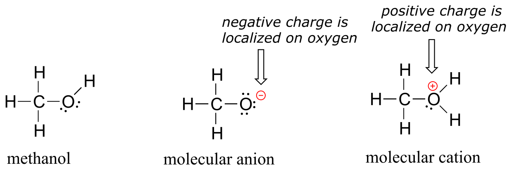fig 1
The molecular anion and cation have overall charges of -1 and +1, respectively. But we can be more specific than that–we can also state for each molecular ion that a formal charge is located specifically on the oxygen atom, rather than on the carbon or any of the hydrogen atoms.
Figuring out the formal charge on different atoms of a molecule is a straightforward process - it’s simply a matter of adding up valence electrons.
An unbound oxygen atom has 6 valence electrons. When it is bound as part of a methanol molecule, however, an oxygen atom is surrounded by 8 valence electrons: 4 nonbonding electrons (two ‘lone pairs’) and 2 electrons in each of its two covalent bonds (one to carbon, one to hydrogen). In the formal charge convention, we say that the oxygen ‘owns’ all 4 nonbonding electrons. However, it only ‘owns’ one electron from each of the two covalent bonds, because covalent bonds involve the sharing of electrons between atoms. Therefore, the oxygen atom in methanol owns 2 + 2 + (½ x 4) = 6 valence electrons.

fig 2a
The formal charge on an atom is calculated as the number of valence electrons owned by the isolated atom minus the number of valence electrons owned by the bound atom in the molecule:
Determining the formal charge on an atom in a molecule:
formal charge =
(number of valence electrons owned by the isolated atom)
- (number of valence electrons owned by the bound atom)
or …
formal charge =
(number of valence electrons owned by the isolated atom)
- (number of non-bonding electrons on the bound atom)
- ( ½ the number of bonding electrons on the bound atom)
Using this formula for the oxygen atom of methanol, we have:
formal charge on oxygen =
(6 valence electrons on isolated atom)
- (4 non-bonding electrons)
- (½ x 4 bonding electrons)
= 6 - 4 - 2 = 0
Thus, oxygen in methanol has a formal charge of zero (in other words, it has no formal charge).
How about the carbon atom in methanol? An isolated carbon owns 4 valence electrons. The bound carbon in methanol owns (½ x 8) = 4 valence electrons:

fig 2c
formal charge on carbon =
(4 valence electron on isolated atom)
- (0 nonbonding electrons)
- (½ x 8 bonding electrons)
= 4 - 0 - 4 = 0
… so the formal charge on carbon is zero.
For each of the hydrogens in methanol, we also get a formal charge of zero:
formal charge on hydrogen =
(1 valence electron on isolated atom)
- (0 nonbonding electrons)
- (½ x 2 bonding electrons)
= 1 - 0 - 1 = 0
Now, let’s look at the cationic form of methanol, CH3OH2+. The bonding picture has not changed for carbon or for any of the hydrogen atoms, so we will focus on the oxygen atom.
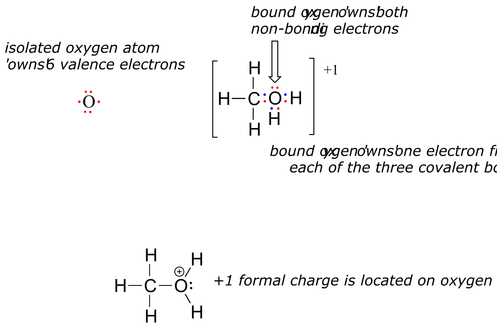fig 2
The oxygen owns 2 non-bonding electrons and 3 bonding elections, so the formal charge calculations becomes:
formal charge on oxygen =
(6 valence electrons in isolated atom)
- (2 non-bonding electrons)
- (½ x 6 bonding electrons)
= 6 - 2 - 3 = 1.
A formal charge of +1 is located on the oxygen atom.
For methoxide, the anionic form of methanol, the calculation for the oxygen atom is:
formal charge on oxygen =
(6 valence electrons in isolated atom)
- (6 non-bonding electrons)
- (½ x 2 bonding electrons)
= 6 - 6 - 1 = -1
… so a formal charge of -1 is located on the oxygen atom.
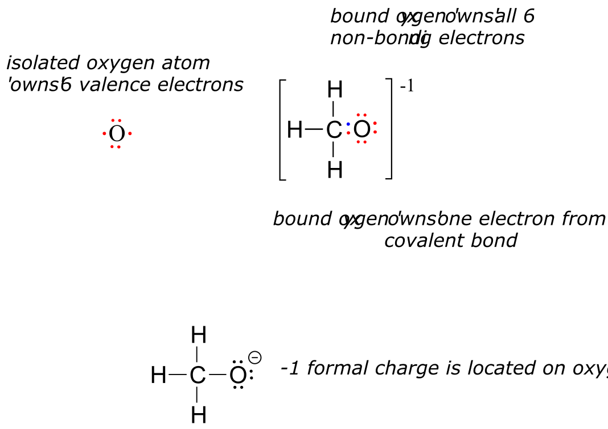A very important rule to keep in mind is that the sum of the formal charges on all atoms of a molecule must equal the net charge on the whole molecule.
When drawing the structures of organic molecules, it is very important to show all non-zero formal charges, being clear about where the charges are located. A structure that is missing non-zero formal charges is not correctly drawn, and will probably be marked as such on an exam!
At this point, thinking back to what you learned in general chemistry, you are probably asking “What about dipoles? Doesn’t an oxygen atom in an O-H bond ‘own’ more of the electron density than the hydrogen, because of its greater electronegativity?” This is absolutely correct, and we will be reviewing the concept of bond dipoles later on. For the purpose of calculating formal charges, however, bond dipoles don’t matter - we always consider the two electrons in a bond to be shared equally, even if that is not an accurate reflection of chemical reality. Formal charges are just that - a formality, a method of electron book-keeping that is tied into the Lewis system for drawing the structures of organic compounds and ions. Later, we will see how the concept of formal charge can help us to visualize how organic molecules react.
Finally, don’t be lured into thinking that just because the net charge on a structure is zero there are no atoms with formal charges: one atom could have a positive formal charge and another a negative formal charge, and the net charge would still be zero. Zwitterions, such as amino acids, have both positive and negative formal charges on different atoms:

Even though the net charge on glycine is zero, it is still mandatory to show the location of the positive and negative formal charges.
Exercise 1.4: Fill in all missing lone pair electrons and formal charges in the structures below. Assume that all atoms have a complete valence shell of electrons. Net charges are shown outside the brackets.
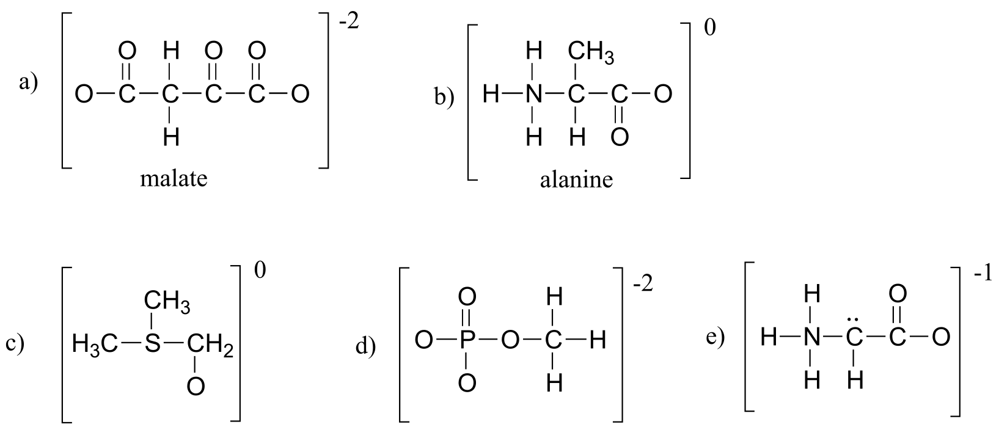
fig 3a
1.1B: Common bonding patterns in organic structures#
The electron-counting methods for drawing Lewis structures and determining formal charges on atoms are an essential starting point for a novice organic chemist, and work quite well when dealing with small, simple structures. But as you can imagine, these methods become unreasonably tedious and time-consuming when you start dealing with larger structures. It would be unrealistic, for example, to ask you to draw the Lewis structure below (of one of the four nucleoside building blocks that make up DNA) and determine all formal charges by adding up, on an atom-by-atom basis, all of the valence electrons.

fig 5
And yet, as organic chemists, and especially as organic chemists dealing with biological molecules, you will be expected soon to draw the structures of large molecules on a regular basis. Clearly, you need to develop the ability to quickly and efficiently draw large structures and determine formal charges. Fortunately, this ability is not terribly hard to come by - all it takes is learning a few shortcuts and getting some practice at recognizing common bonding patterns.
Let’s start with carbon, the most important element for organic chemists. Carbon is tetravalent, meaning that it tends to form four bonds. If you look again carefully at the structure of the DNA nucleoside 2’-deoxycytidine above, you should recognize that each carbon atom has four bonds, no lone pairs, and a formal charge of zero. Some of the carbon atoms have four single bonds, and some have one double bond and two single bonds. These are the two most common bonding patterns for carbon, along with a third option where carbon has one triple bond and one single bond.
Common bonding patterns for carbon

fig 6
These three bonding patterns apply to most organic molecules, but there are exceptions. Here is a very important such exception: in carbon dioxide, the four bonds to the carbon atom take the form of two double bonds. (O=C=O).
Carbon is also sometimes seen with a formal charge of +1 (a carbocation) or -1 (a carbanion). Notice that a carbocation does not have a full octet of valence electrons.
Additional bonding patterns for carbon (high energy intermediate species)

fig 6a
Carbocations, carbanions, and carbon radicals are very high-energy (unstable) species and thus we do not expect to see them in the structure of a stable compound. However, they are important in organic chemistry because they often form as transient (short-lived) intermediates in reactions - they form, then very quickly change into something else. We will have much more to say about carbocation, carbanion, and radical intermediates in later chapters.
The bonding pattern for hydrogen atoms is easy: only one bond, no nonbonding electrons, and no formal charge. The exceptions to this rule are the proton, (H+, just a single proton and no electrons) and the hydride ion, H-, which is a proton plus two electrons. Because we are concentrating in this book on organic chemistry as applied to living things, however, we will not be seeing ‘naked’ protons and hydrides as such: they are far too reactive to be present in that form in aqueous solution. Nonetheless, the idea of a proton will be very important when we discuss acid-base chemistry, and the idea of a hydride ion will become very important much later in the book when we discuss organic oxidation and reduction reactions.
We’ll next turn to oxygen atoms. Typically, you will see an oxygen bonding in one of three ways.
Common bonding patterns for oxygen:

fig 7
If oxygen has two bonds and two lone pairs, as in water, it will have a formal charge of zero. If it has one bond and three lone pairs, as in hydroxide ion, it will have a formal charge of -1. If it has three bonds and one lone pair, as in hydronium ion, it will have a formal charge of +1.
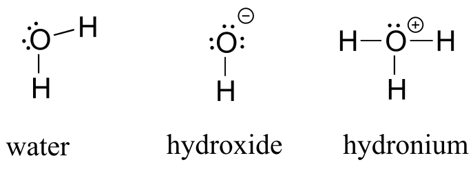fig 7a
Nitrogen has two major bonding patterns: three bonds and one lone pair, or four bonds and a positive formal charge.
Common bonding patterns for nitrogen:
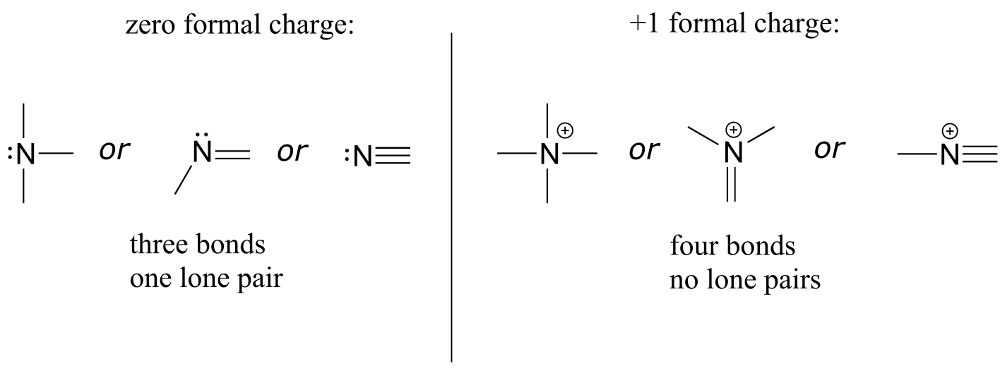fig 8
Nitrogen is occasionally also seen with two bonds, two lone pairs, and a negative formal charge - however, these species are extremely reactive and not very relevant to biological chemistry.
Two third row elements are commonly found in biological organic molecules: sulfur and phosphorus. Although both of these elements have other bonding patterns that are relevant in laboratory chemistry, in a biological context sulfur most commonly follows the same bonding/formal charge pattern as oxygen, while phosphorus is seen in a form in which it has five bonds (almost always to oxygen), no nonbonding electrons, and a formal charge of zero. Remember that atoms of elements in the third row and below in the periodic table have ‘expanded valence shells’ with d orbitals available for bonding, and the the octet rule does not apply.
Common bonding pattern for phosphorus (phosphate)
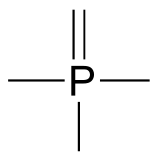fig 9
Finally, the halogens (fluorine, chlorine, bromine, and iodine) are very important in laboratory and medicinal organic chemistry, but less common in naturally occurring organic molecules. Halogens in organic chemistry usually are seen with one bond, three lone pairs, and a formal charge of zero, or as ions in solution with no bonds, four lone pairs, and a negative formal charge.
Common bonding pattern for halogens:
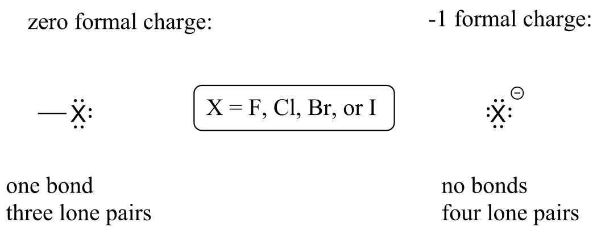fig 10
These patterns, if learned and internalized so that you don’t even need to think about them, will allow you to draw large organic structures, complete with formal charges, quite quickly.
Once you have gotten the hang of drawing Lewis structures in this way, it is not always necessary to draw lone pairs on heteroatoms, as you can assume that the proper number of electrons are present around each atom to match the indicated formal charge (or lack thereof). Often, though, lone pairs are drawn, particularly on nitrogen, if doing so helps to make an explanation clearer.
Exercise 1.5: Draw one structure that corresponds to each of the following molecular formulas, using the common bonding patters covered above. Be sure to include all lone pairs and formal charges where applicable, and assume that all atoms have a full valence shell of electrons. More than one correct answer is possible for each, so you will want to check your answers with your instructor or tutor.
a) C5H10O b) C5H8O c) C6H8NO+ d) C4H3O2-
1.1C: Using condensed structures and line structures#
If you look ahead in this and other books at the way organic compounds are drawn, you will see that the figures are somewhat different from the Lewis structures you are used to seeing in your general chemistry book. In some sources, you will see condensed structures for smaller molecules instead of full Lewis structures:

fig 11a
More commonly, organic and biological chemists use an abbreviated drawing convention called line structures. The convention is quite simple and makes it easier to draw molecules, but line structures do take a little bit of getting used to. Carbon atoms are depicted not by a capital C, but by a ‘corner’ between two bonds, or a free end of a bond. Open-chain molecules are usually drawn out in a ‘zig-zig’ shape. Hydrogens attached to carbons are generally not shown: rather, like lone pairs, they are simply implied (unless a positive formal charge is shown, all carbons are assumed to have a full octet of valence electrons). Hydrogens bonded to nitrogen, oxygen, sulfur, or anything other than carbon are shown, but are usually drawn without showing the bond. The following examples illustrate the convention.

fig 11
As you can see, the ‘pared down’ line structure makes it much easier to see the basic structure of the molecule and the locations where there is something other than C-C and C-H single bonds. For larger, more complex biological molecules, it becomes impractical to use full Lewis structures. Conversely, very small molecules such as ethane should be drawn with their full Lewis or condensed structures.
Sometimes, one or more carbon atoms in a line structure will be depicted with a capital C, if doing so makes an explanation easier to follow. If you label a carbon with a C, you also must draw in the hydrogens for that carbon.
Exercise 1.6: A good way to test your understanding of the line structure convention is to determine the number of hydrogen atoms in a molecule from its line structure. Do this for the structures below.

fig 12
Exercise 1.7:
a) Draw a line structure for the DNA base 2-deoxycytidine (the full structure was shown earlier)
b) Draw line structures for histidine (an amino acid) and pyridoxine (Vitamin B6).

fig 13
Exercise 1.8: Add non-zero formal charges to the structural drawing below:
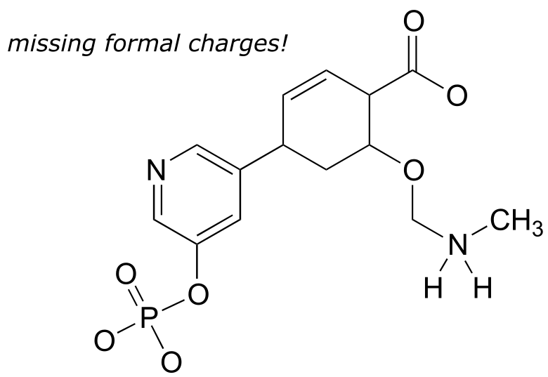Exercise 1.9: Find, anywhere in chapters 2-17 of this textbook, one example of each of the common bonding patterns specified below. Check your answers with your instructor or tutor.
a) carbon with one double bond, two single bonds, no lone pairs, and zero formal charge
b) oxygen with two single bonds, two lone pairs, and zero formal charge
c) oxygen with one double bond, two lone pairs, and zero formal charge
d) nitrogen with one double bond, two single bonds, and a +1 formal charge
e) oxygen with one single bond, three lone pairs, and a negative formal charge
1.1D: Constitutional isomers#
Imagine that you were asked to draw a structure for a compound with the molecular formula C4H10. This would not be difficult - you could simply draw:
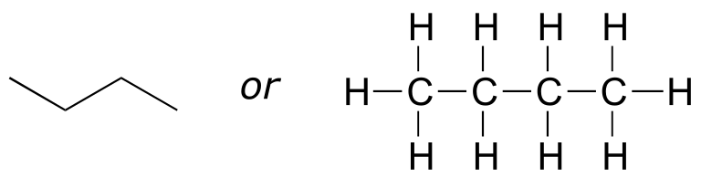fig 14
But when you compared your answer with that of a classmate, she may have drawn this structure:
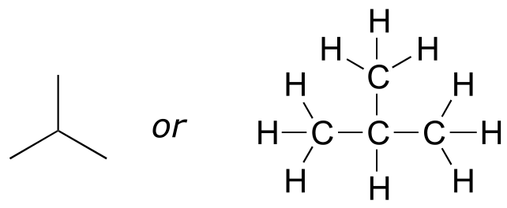fig 15
Who is correct? The answer, of course, is that both of you are. A molecular formula only tells you how many atoms of each element are present in the compound, not what the actual atom-to-atom connectivity is. There are often many different possible structures for one molecular formula. Compounds that have the same molecular formula but different connectivity are called constitutional isomers (sometimes the term ‘structural isomer’ is also used). The Greek term ‘iso’ means ‘same’.
Fructose and glucose are constitutional isomers with the molecular formula C6H12O6.

fig 16
Exercise 1.10: Draw a constitutional isomer of ethanol, CH3CH2OH.
Exercise 1.11: Draw all of the possible constitutional isomers with the given molecular formula.
a) C5H12
b) C4H10O
c) C3H9N
Section 1.2: Functional groups and organic nomenclature#
1.2A: Functional groups in organic compounds#
Functional groups are structural units within organic compounds that are defined by specific bonding arrangements between specific atoms. The structure of capsaicin, the compound discussed in the beginning of this chapter, incorporates several functional groups, labeled in the figure below and explained throughout this section.
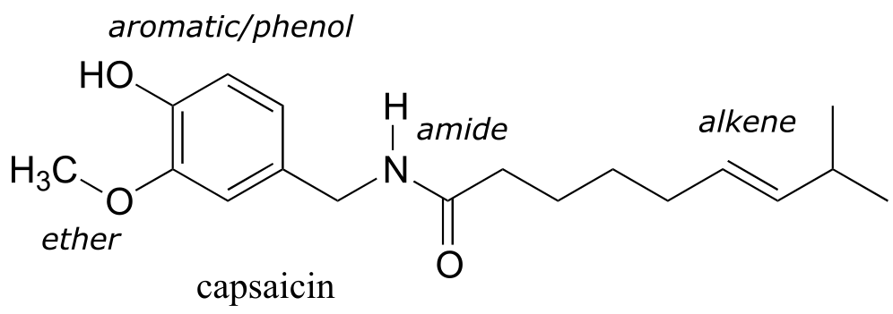fig 32
As we progress in our study of organic chemistry, it will become extremely important to be able to quickly recognize the most common functional groups, because they are the key structural elements that define how organic molecules react. For now, we will only worry about drawing and recognizing each functional group, as depicted by Lewis and line structures. Much of the remainder of your study of organic chemistry will be taken up with learning about how the different functional groups behave in organic reactions.
The ‘default’ in organic chemistry (essentially, the lack of any functional groups) is given the term alkane, characterized by single bonds between carbon and carbon, or between carbon and hydrogen. Methane, CH4, is the natural gas you may burn in your furnace. Octane, C8H18, is a component of gasoline.
Alkanes

fig 17
Alkenes (sometimes called olefins) have carbon-carbon double bonds, and alkynes have carbon-carbon triple bonds. Ethene, the simplest alkene example, is a gas that serves as a cellular signal in fruits to stimulate ripening. (If you want bananas to ripen quickly, put them in a paper bag along with an apple - the apple emits ethene gas, setting off the ripening process in the bananas). Ethyne, commonly called acetylene, is used as a fuel in welding blow torches.
Alkenes and alkynes
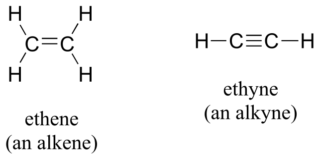fig 18
In chapter 2, we will study the nature of the bonding on alkenes and alkynes, and learn that that the bonding in alkenes is trigonal planar in in alkynes is linear. Furthermore, many alkenes can take two geometric forms: cis or trans. The cis and trans forms of a given alkene are different molecules with different physical properties because, as we will learn in chapter 2, there is a very high energy barrier to rotation about a double bond. In the example below, the difference between cis and trans alkenes is readily apparent.
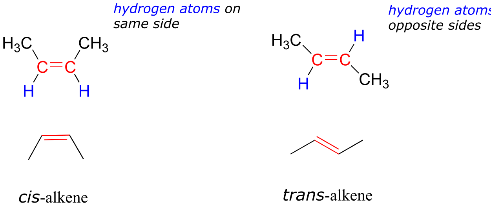fig 18a
We will have more to say about the subject of cis and trans alkenes in chapter 3, and we will learn much more about the reactivity of alkenes in chapter 14.
Alkanes, alkenes, and alkynes are all classified as hydrocarbons, because they are composed solely of carbon and hydrogen atoms. Alkanes are said to be saturated hydrocarbons, because the carbons are bonded to the maximum possible number of hydrogens–in other words, they are saturated with hydrogen atoms. The double and triple-bonded carbons in alkenes and alkynes have fewer hydrogen atoms bonded to them–they are thus referred to as unsaturated hydrocarbons. As we will see in chapter 15, hydrogen can be added to double and triple bonds, in a type of reaction called ‘hydrogenation’.
The aromatic group is exemplified by benzene (which used to be a commonly used solvent on the organic lab, but which was shown to be carcinogenic), and naphthalene, a compound with a distinctive ‘mothball’ smell. Aromatic groups are planar (flat) ring structures, and are widespread in nature. We will learn more about the structure and reactions of aromatic groups in chapters 2 and 14.
aromatics

fig 19
When the carbon of an alkane is bonded to one or more halogens, the group is referred to as an alkyl halide or haloalkane. Chloroform is a useful solvent in the laboratory, and was one of the earlier anesthetic drugs used in surgery. Chlorodifluoromethane was used as a refrigerant and in aerosol sprays until the late twentieth century, but its use was discontinued after it was found to have harmful effects on the ozone layer. Bromoethane is a simple alkyl halide often used in organic synthesis. Alkyl halides groups are quite rare in biomolecules.
alkyl halides
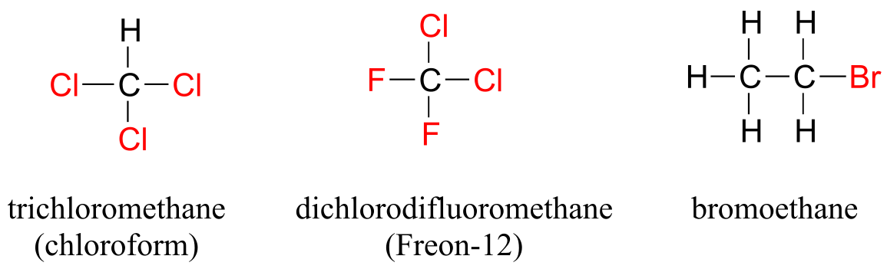fig 20
In the alcohol functional group, a carbon is single-bonded to an OH group (the OH group, by itself, is referred to as a hydroxyl). Except for methanol, all alcohols can be classified as primary, secondary, or tertiary. In a primary alcohol, the carbon bonded to the OH group is also bonded to only one other carbon. In a secondary alcohol and tertiary alcohol, the carbon is bonded to two or three other carbons, respectively. When the hydroxyl group is directly attached to an aromatic ring, the resulting group is called a phenol. The sulfur analog of an alcohol is called a thiol (from the Greek thio, for sulfur).
alcohols, phenols, and thiols

fig 21
Note that the definition of a phenol states that the hydroxyl oxygen must be directly attached to one of the carbons of the aromatic ring. The compound below, therefore, is not a phenol - it is a primary alcohol.

fig 22
The distinction is important, because as we will see later, there is a significant difference in the reactivity of alcohols and phenols.
The deprotonated forms of alcohols, phenols, and thiols are called alkoxides, phenolates, and thiolates, respectively. A protonated alcohol is an oxonium ion.

fig 23
In an ether functional group, a central oxygen is bonded to two carbons. Below is the structure of diethyl ether, a common laboratory solvent and also one of the first compounds to be used as an anesthetic during operations. The sulfur analog of an ether is called a thioether or sulfide.
ethers and sulfides

Amines are characterized by nitrogen atoms with single bonds to hydrogen and carbon. Just as there are primary, secondary, and tertiary alcohols, there are primary, secondary, and tertiary amines. Ammonia is a special case with no carbon atoms.
One of the most important properties of amines is that they are basic, and are readily protonated to form ammonium cations. In the case where a nitrogen has four bonds to carbon (which is somewhat unusual in biomolecules), it is called a quaternary ammonium ion.
amines
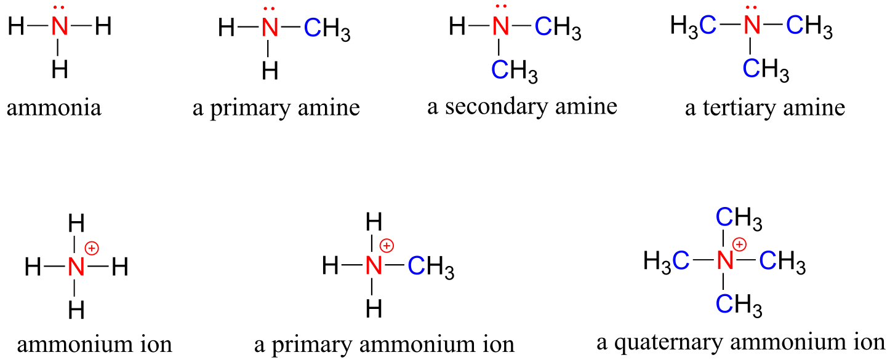fig 25
Note: Do not be confused by how the terms ‘primary’, ‘secondary’, and ‘tertiary’ are applied to alcohols and amines - the definitions are different. In alcohols, what matters is how many other carbons the alcohol carbon is bonded to, while in amines, what matters is how many carbons the nitrogen is bonded to.

fig 26
Phosphate and its derivative functional groups are ubiquitous in biomolecules. Phosphate linked to a single organic group is called a phosphate ester; when it has two links to organic groups it is called a phosphate diester. A linkage between two phosphates creates a phosphate anhydride.
phosphate functional groups
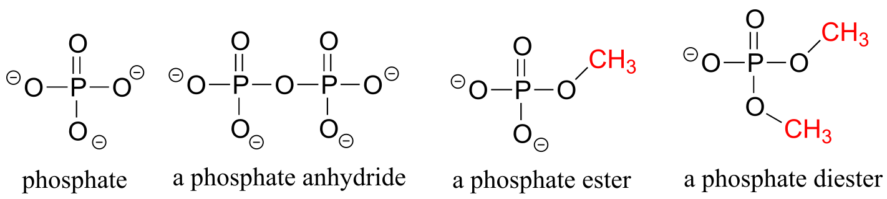fig 27
Chapter 9 of this book is devoted to the structure and reactivity of the phosphate group.
There are a number of functional groups that contain a carbon-oxygen double bond, which is commonly referred to as a carbonyl. Ketones and aldehydes are two closely related carbonyl-based functional groups that react in very similar ways. In a ketone, the carbon atom of a carbonyl is bonded to two other carbons. In an aldehyde, the carbonyl carbon is bonded on one side to a hydrogen, and on the other side to a carbon. The exception to this definition is formaldehyde, in which the carbonyl carbon has bonds to two hydrogens.
A group with a carbon-nitrogen double bond is called an imine, or sometimes a Schiff base (in this book we will use the term ‘imine’). The chemistry of aldehydes, ketones, and imines will be covered in chapter 10.
aldehydes, ketones, and imines
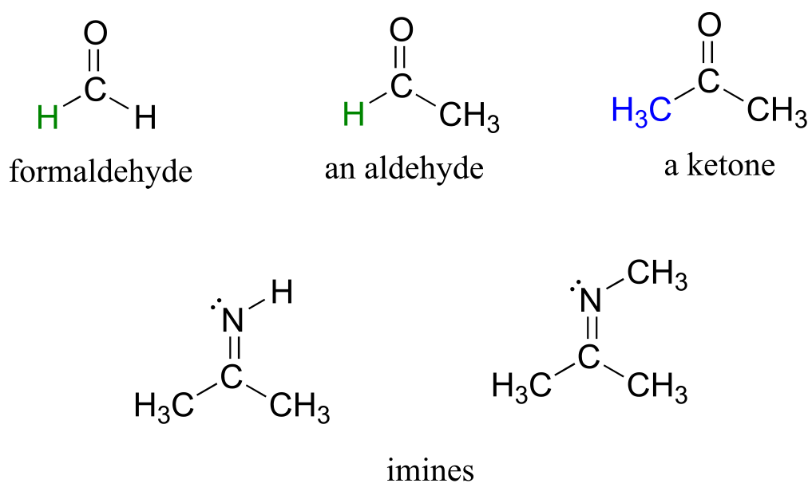fig 28
When a carbonyl carbon is bonded on one side to a carbon (or hydrogen) and on the other side to an oxygen, nitrogen, or sulfur, the functional group is considered to be one of the ‘carboxylic acid derivatives’, a designation that describes a set of related functional groups. The eponymous member of this family is the carboxylic acid functional group, in which the carbonyl is bonded to a hydroxyl group. The conjugate base of a carboxylic acid is a carboxylate. Other derivatives are carboxylic esters (usually just called ‘esters’), thioesters, amides, acyl phosphates, acid chlorides, and acid anhydrides. With the exception of acid chlorides and acid anhydrides, the carboxylic acid derivatives are very common in biological molecules and/or metabolic pathways, and their structure and reactivity will be discussed in detail in chapter 11.
Carboxylic acid derivatives

fig 29
Finally, a nitrile group is characterized by a carbon triple-bonded to a nitrogen.

A single compound often contains several functional groups, particularly in biological organic chemistry. The six-carbon sugar molecules glucose and fructose, for example, contain aldehyde and ketone groups, respectively, and both contain five alcohol groups (a compound with several alcohol groups is often referred to as a ‘polyol’).
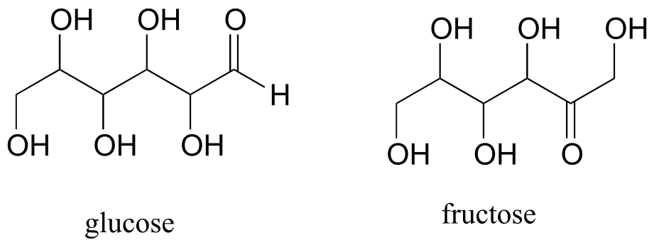fig 31
The hormone testosterone, the amino acid phenylalanine, and the glycolysis metabolite dihydroxyacetone phosphate all contain multiple functional groups, as labeled below.

fig 33
While not in any way a complete list, this section has covered most of the important functional groups that we will encounter in biological organic chemistry. Table 9 in the tables section at the back of this book provides a summary of all of the groups listed in this section, plus a few more that will be introduced later in the text.
Exercise 1.12: Identify the functional groups (other than alkanes) in the following organic compounds. State whether alcohols and amines are primary, secondary, or tertiary.
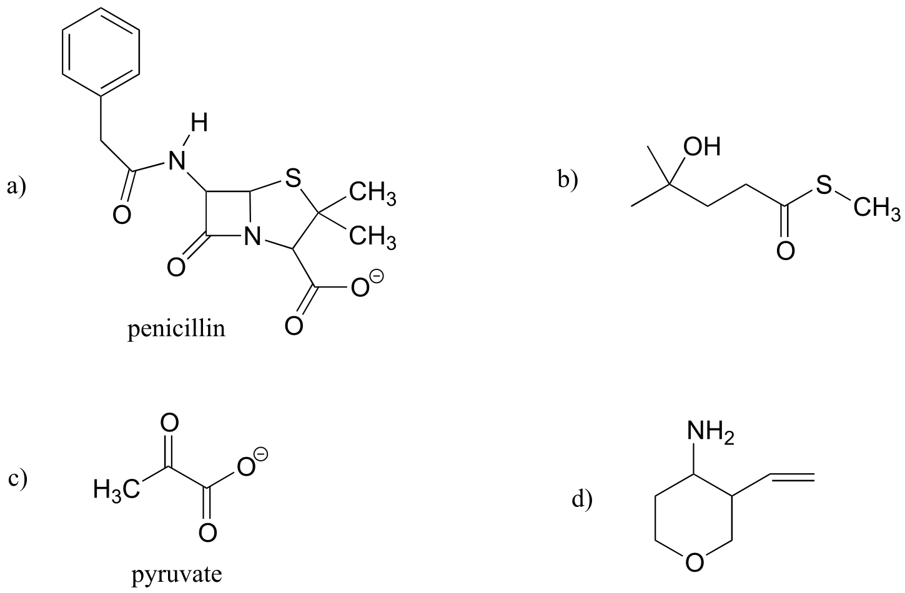
fig 34
Exercise 1.13: Draw one example each of compounds fitting the descriptions below, using line structures. Be sure to designate the location of all non-zero formal charges. All atoms should have complete octets (phosphorus may exceed the octet rule). There are many possible correct answers for these, so be sure to check your structures with your instructor or tutor.
a) a compound with molecular formula C6H11NO that includes alkene, secondary amine, and primary alcohol functional groups
b) an ion with molecular formula C3H5O6P 2- that includes aldehyde, secondary alcohol, and phosphate functional groups.
c) A compound with molecular formula C6H9NO that has an amide functional group, and does not have an alkene group.
1.2B: Naming organic compounds#
A system has been devised by the International Union of Pure and Applied Chemistry (IUPAC, usually pronounced eye-you-pack) for naming organic compounds. While the IUPAC system is convenient for naming relatively small, simple organic compounds, it is not generally used in the naming of biomolecules, which tend to be quite large and complex. It is, however, a good idea (even for biologists) to become familiar with the basic structure of the IUPAC system, and be able to draw simple structures based on their IUPAC names.
Naming an organic compound usually begins with identify what is referred to as the ‘parent chain’, which is the longest straight chain of carbon atoms. We’ll start with the simplest straight chain alkane structures. CH4 is called methane, and C2H6 ethane. The table below continues with the names of longer straight-chain alkanes: be sure to commit these to memory, as they are the basis for the rest of the IUPAC nomenclature system (and are widely used in naming biomolecules as well).
Names for straight-chain alkanes:
Number of carbons |
Name |
|---|---|
1 |
methane |
2 |
ethane |
3 |
propane |
4 |
butane |
5 |
pentane |
6 |
hexane |
7 |
heptane |
8 |
octane |
9 |
nonane |
10 |
decane |
Substituents branching from the main parent chain are located by a carbon number, with the lowest possible numbers being used (for example, notice in the example below that the compound on the left is named 1-chlorobutane, not 4-chlorobutane). When the substituents are small alkyl groups, the terms methyl, ethyl, and propyl are used.

fig 36
Other common names for hydrocarbon substituent groups isopropyl, tert-butyl and phenyl.
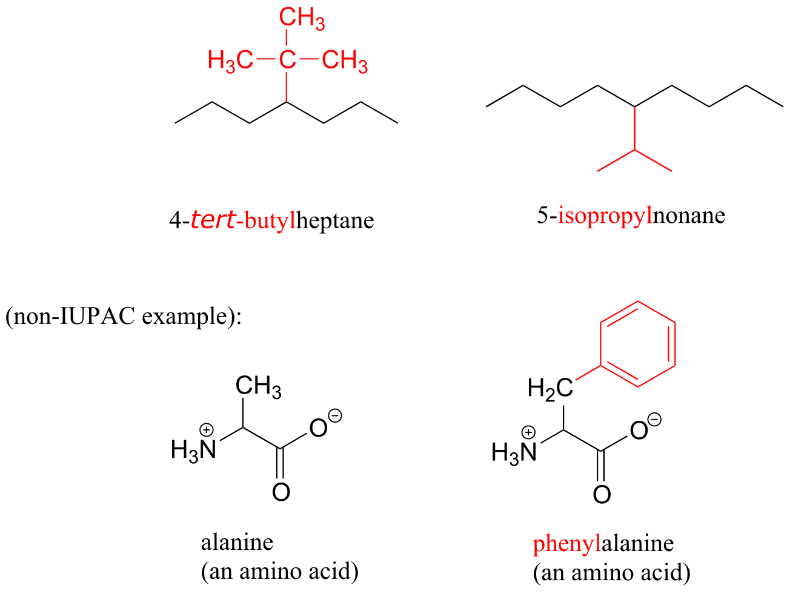fig 36a
Notice in the example below, an ‘ethyl group’ (in blue) is not treated as a substituent, rather it is included as part of the parent chain, and the methyl group is treated as a substituent. The IUPAC name for straight-chain hydrocarbons is always based on the longest possible parent chain, which in this case is four carbons, not three.
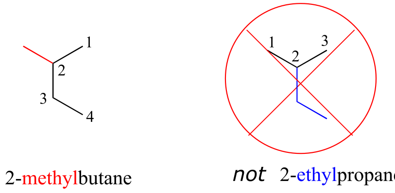fig 37
Cyclic alkanes are called cyclopropane, cyclobutane, cyclopentane, cyclohexane, and so on.

fig 38
In the case of multiple substituents, the prefixes di, tri, and tetra are used.
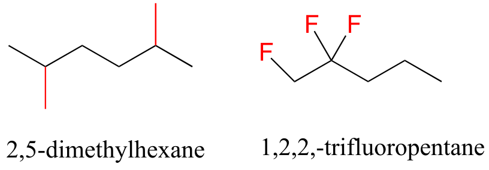fig 39
Functional groups have characteristic suffixes. Alcohols, for example, have ‘ol’ appended to the parent chain name, along with a number designating the location of the hydroxyl group. Ketones are designated by ‘one’.

fig 40
Alkenes are designated with an ‘ene’ ending, and when necessary the location and geometry of the double bond are indicated. Compounds with multiple double bonds are called dienes, trienes, etc.

fig 41
Some groups can only be present on a terminal carbon, and thus a locating number is not necessary: aldehydes end in ‘al’, carboxylic acids in ‘oic acid’, and carboxylates in ‘oate’.

fig 43
Ethers and sulfides are designated by naming the two groups on either side of the oxygen or sulfur.
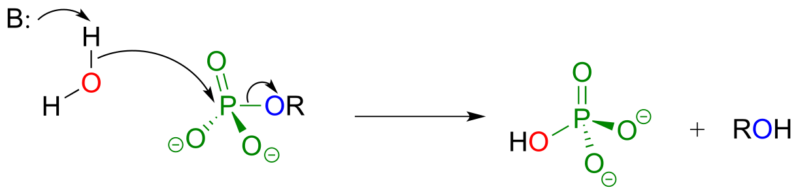fig 44
If an amide has an unsubstituted –NH2 group, the suffix is simply ‘amide’. In the case of a substituted amide, the group attached to the amide nitrogen is named first, along with the letter ‘N’ to clarify where this group is located. Note that the structures below are both based on a three-carbon (propan) parent chain.
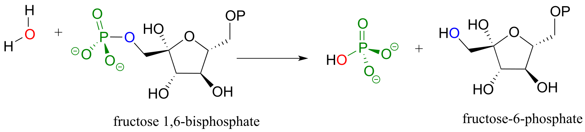fig 45
For esters, the suffix is ‘oate’. The group attached to the oxygen is named first.

fig 46
All of the examples we have seen so far have been simple in the sense that only one functional group was present on each molecule. There are of course many more rules in the IUPAC system, and as you can imagine, the IUPAC naming of larger molecules with multiple functional groups, ring structures, and substituents can get very unwieldy very quickly. The illicit drug cocaine, for example, has the IUPAC name ‘methyl (1R,2R,3S,5S)-3-(benzoyloxy)-8-methyl-8-azabicyclo[3.2.1] octane-2-carboxylate’ (this name includes designations for stereochemistry, which is a structural issue that we will not tackle until chapter 3).
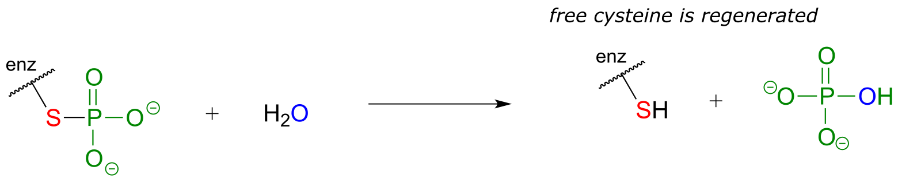fig 47
You can see why the IUPAC system is not used very much in biological organic chemistry - the molecules are just too big and complex. A further complication is that, even outside of a biological context, many simple organic molecules are known almost universally by their ‘common’, rather than IUPAC names. The compounds acetic acid, chloroform, and acetone are only a few examples.
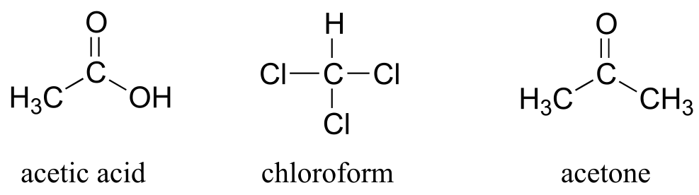fig 48
In biochemistry, nonsystematic names (like ‘cocaine’, ‘capsaicin’, ‘pyruvate’ or ‘ascorbic acid’) are usually used, and when systematic nomenclature is employed it is often specific to the class of molecule in question: different systems have evolved, for example, for fats and for carbohydrates. We will not focus very intensively in this text on IUPAC nomenclature or any other nomenclature system, but if you undertake a more advanced study in organic or biological chemistry you may be expected to learn one or more naming systems in some detail.
Exercise 1.14: Give IUPAC names for acetic acid, chloroform, and acetone.
Exercise 1.15: Draw line structures of the following compounds, based on what you have learned about the IUPAC nomenclature system:
a) methylcyclohexane
b) 5-methyl-1-hexanol
c) 2-methyl-2-butene
d) 5-chloropentanal
e) 2,2-dimethylcyclohexanone
f) 4-penteneoic acid
g) N-ethyl-N-cyclopentylbutanamide
1.2C: Abbreviated organic structures#
Often when drawing organic structures, chemists find it convenient to use the letter ‘R’ to designate part of a molecule outside of the region of interest. If we just want to refer in general to a functional group without drawing a specific molecule, for example, we can use ‘R’ groups to focus attention on the group of interest:

fig 49
The R group is a convenient way to abbreviate the structures of large biological molecules, especially when we are interested in something that is occurring specifically at one location on the molecule. For example, in chapter 15 when we look at biochemical oxidation-reduction reactions involving the flavin molecule, we will abbreviate a large part of the flavin structure which does not change at all in the reactions of interest:
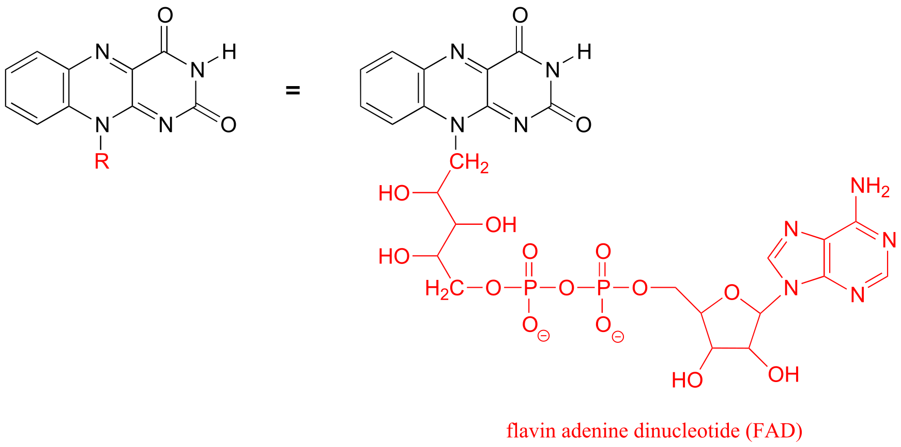fig 50
As an alternative, we can use a ‘break’ symbol to indicate that we are looking at a small piece or section of a larger molecule. This is used commonly in the context of drawing groups on large polymers such as proteins or DNA.

fig 51
Finally, R groups can be used to concisely illustrate a series of related compounds, such as the family of penicillin-based antibiotics.

fig 52
Using abbreviations appropriately is a very important skill to develop when studying organic chemistry in a biological context, because although many biomolecules are very large and complex (and take forever to draw!), usually we are focusing on just one small part of the molecule where a change is taking place. As a rule, you should never abbreviate any atom involved in a bond-breaking or bond-forming event that is being illustrated: only abbreviate that part of the molecule which is not involved in the reaction of interest. For example, carbon #2 in the reactant/product below most definitely is involved in bonding changes, and therefore should not be included in the ‘R’ group.
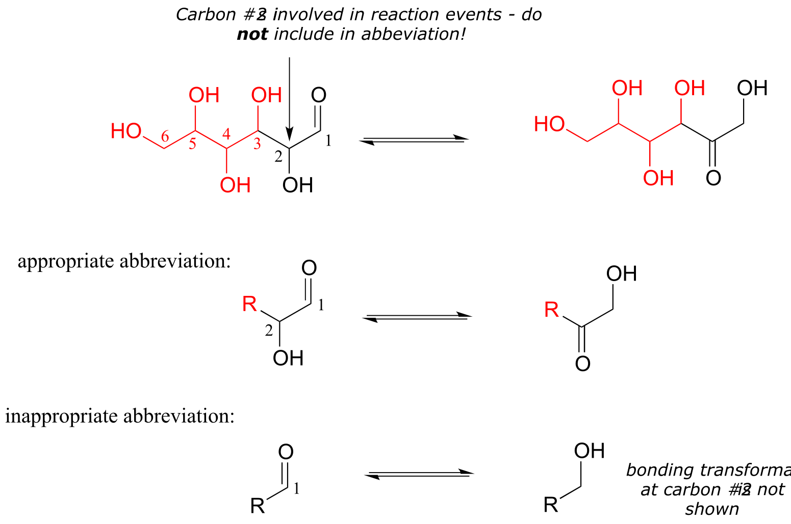fig 52a
If you are unsure whether to draw out part of a structure or abbreviate it, the safest thing to do is to draw it out.
Exercise 1.16:
a) If you intend to draw out the chemical details of a reaction in which the methyl ester functional group of cocaine (see earlier figure) was converted to a carboxylate plus methanol, what would be an appropriate abbreviation to use for the cocaine structure (assuming that you only wanted to discuss the chemistry specifically occurring at the ester group)?
b) Below is the (somewhat complicated) reaction catalyzed by an enzyme known as ‘Rubisco’, by which plants ‘fix’ carbon dioxide. Carbon dioxide and the oxygen of water are colored red and blue respectively to help you see where those atoms are incorporated into the products. Propose an appropriate abbreviation for the starting compound (ribulose 1,5-bisphosphate), using two different ‘R’ groups, R1 and R2.
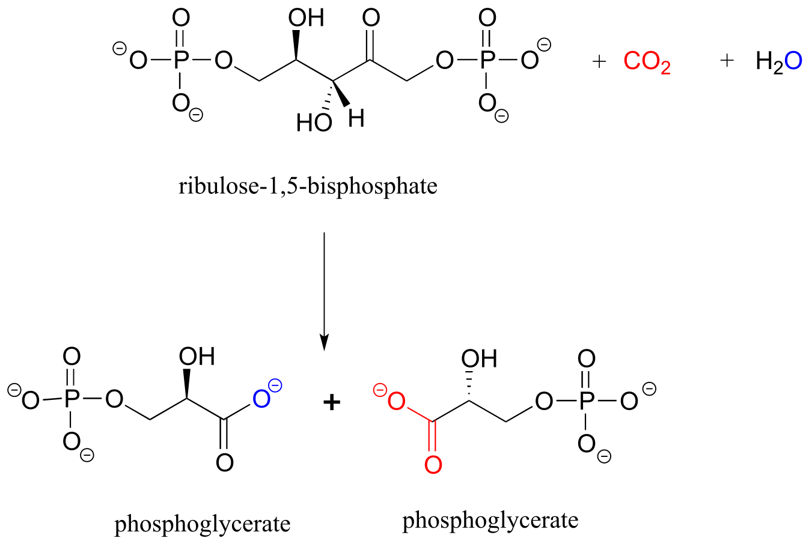Section 1.3: Structures of important classes of biological molecules#
Because we are focusing in this textbook on biologically relevant organic chemistry, we will frequently be alluding to important classes of biological molecules such as lipids, carbohydrates, proteins, and nucleic acids (DNA and RNA). Now is a good time to go through a quick overview of what these molecules look like. These are large, complex molecules and there is a lot of information here: you are not expected to memorize these structures or even, at this point, to fully understand everything presented in this section. For now, just read through and get what you can out of it, and work on recognizing the fundamental things you have just learned: common bonding patterns, formal charges, functional groups, and so forth. Later, you can come back to this section for review when these biomolecules are referred to in different contexts throughout the remainder of the book.
1.3A: Lipids#
We’ll start with a large subgroup of a class of biomolecules called lipids, which includes fats, oils, waxes, and isoprenoid compounds such as cholesterol.
Fatty acids are composed of hydrocarbon chains terminating in a carboxylic acid/carboxylate group (we will learn in Chapter 7 that carboxylic acids are predominantly in their anionic, carboxylate form in biological environments). Saturated fatty acids contain only alkane carbons (single bonds only), mononsaturated fatty acids contain a single double bond, and polyunsaturated fatty acids contain two or more double bonds. The double bonds in naturally occurring fatty acids are predominantly in the cis configuration.
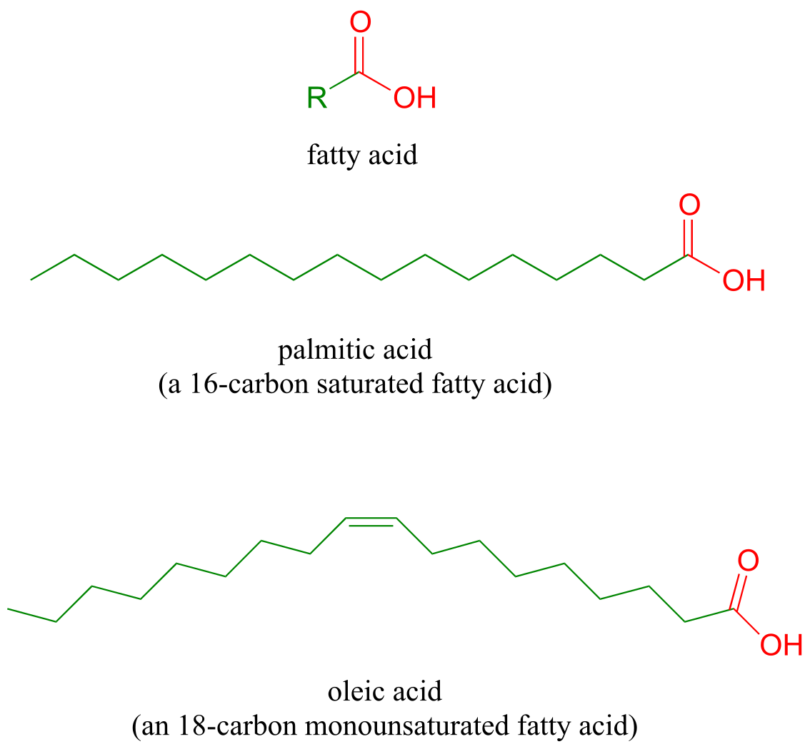fig 53
Fatty acids are synthesized in the body by a process in which the hydrocarbon chain is elongated two carbons at a time. Each two-carbon unit is derived from a metabolic intermediate called acetyl-coA, which is essentially an acetic acid (vinegar) molecule linked to a large ‘carrier’ molecule, called coenzyme A, by a thioester functional group. We will see much more of coenzyme A when we study the chemistry of thioesters in chapter 11.
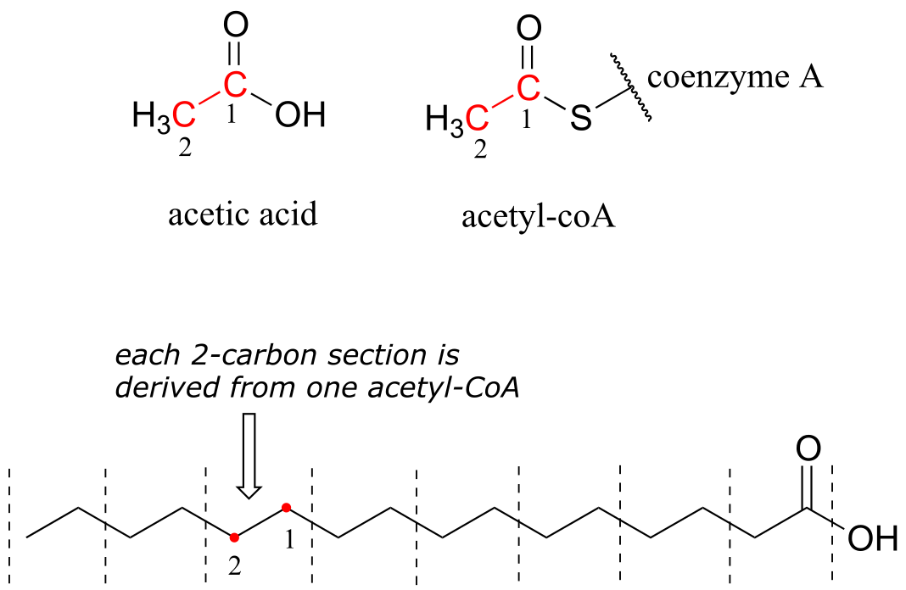fig 54
The breakdown of fatty acids in the body also occurs two carbons at a time, and the endpoint is again acetyl-coenzyme A. We will learn about the details of all of the reactions in these metabolic pathways at various places in this book. If you go on to take a biochemistry course, you will learn more about the big picture of fatty acid metabolism - how it is regulated, and how is fits together with other pathways of central metabolism.
Fats and oils are forms of triacylglycerol, a molecule composed of a glycerol backbone with three fatty acids linked by ester functional groups.

fig 55
Solid fats (predominant in animals) are triacylglycerols with long (16-18 carbon) saturated fatty acids. Liquid oils (predominant in plants) have unsaturated fatty acids, sometimes with shorter hydrocarbon chains. In chapter 2 we will learn about how chain length and degree of unsaturation influences the physical properties of fats and oils.
Cell membranes are composed of membrane lipids, which are diacylglycerols linked to a hydrophilic ‘head group’ on the third carbon of the glycerol backbone. The fatty acid chains can be of various lengths and degrees of saturation, and the two chains combined make up the hydrophobic ‘tail’ of each membrane lipid molecule.

fig 56
In chapter 2 we will see how these molecules come together to form a cell membrane.
Exercise 1.17: What functional group links the phosphatidylcholine ‘head’ group to glycerol in the membrane lipid structure shown above?
Waxes are composed of fatty acids linked to long chain alcohols through an ester group. Tricontanyl palmitate is a major component of beeswax, and is constituted of a 16-carbon fatty acid linked to a 30-carbon alcohol.
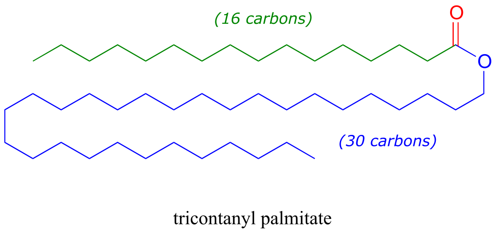fig 56a
Isoprenoids, a broad class of lipids present in all forms of life, are based on a five-carbon, branched-chain building block called isoprene. In humans, cholesterol and hormones such as testosterone are examples of isoprenoid biomolecules. In plants, isoprenoids include the deeply colored compounds such as lycopene (the red in tomatoes) and carotenoids (the yellows and oranges in autumn leaves).
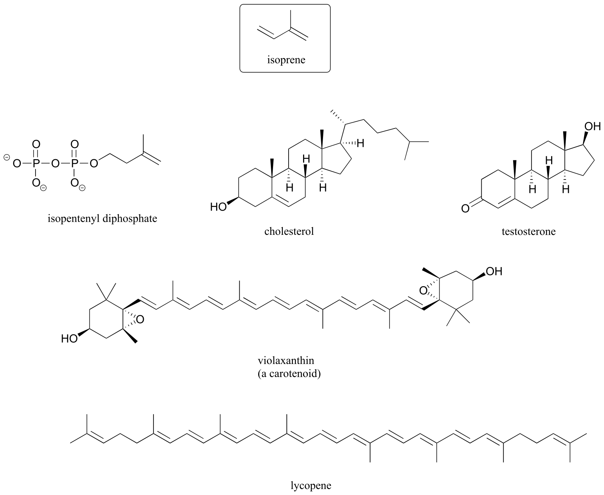fig 57
In almost all eukaryotes, isopentenyl diphosphate (the building block molecule for all isoprenoid compounds) is synthesized from three acetyl-Coenzyme A molecules. Bacteria and the plastid organelles in plants have a different biosynthetic pathway to isopentenyl diphosphate, starting with pyruvate and glyceraldehyde phosphate.

1.3B: Biopolymer basics#
Carbohydrates, proteins, and nucleic acids are the most important polymers in the living world. To understand what a polymer is, simply picture a long chain made by connecting lots of individual beads, each of which is equipped with two hooks. In chemical terminology, each bead is a monomer, the hooks are linking groups, and the whole chain is a polymer.

fig 59
1.3C: Carbohydrates#
The term ‘carbohydrate’, which literally means ‘hydrated carbons’, broadly refers to monosaccharides, disaccharides, oligosaccharides (shorter polymers) and polysaccharides (longer polymers). We will cover the chemistry of carbohydrates more completely in chapter 10, but the following is a quick overview.
Monosaccharides (commonly called ‘sugars’) are four- to six-carbon molecules with multiple alcohol groups and a single aldehyde or ketone group. Many monosaccharides exist in aqueous solution as a rapid equilibrium between an open chain and one or more cyclic forms. Two forms of a six-carbon monosaccharide are shown below.
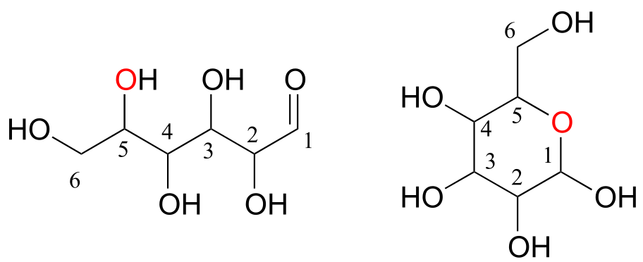fig 60
Disaccharides are two monosaccharides linked together: for example, sucrose, or table sugar, is a disaccharide of glucose and fructose.

fig 61
Oligosaccharides and polysaccharides are longer polymers of monosaccharides. Cellulose is a polysaccharide of repeating glucose monomers. As a major component of the cell walls of plants, cellulose is the most abundant organic molecule on the planet! A two-glucose stretch of a cellulose polymer is shown below.
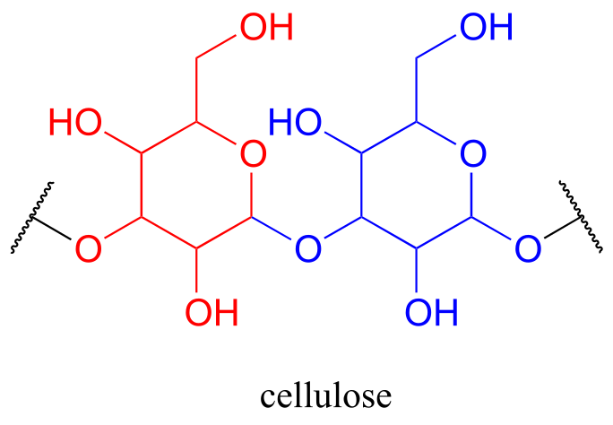fig 61a
The linking group in carbohydrates is not one that we have covered in this chapter - in organic chemistry this group is called an acetal, while biochemists usually use the term glycosidic bond when talking about carbohydrates (again, the chemistry of these groups will be covered in detail in chapter 10).
The possibilities for carbohydrate structures are vast, depending on which monomers are used (there are many monosaccharides in addition to glucose and fructose), which carbons are linked, and other geometric factors which we will learn about later. Multiple linking (branching) is also common, so many carbohydrates are not simply linear chains. In addition, carbohydrate chains are often attached to proteins and/or lipids, especially on the surface of cells. All in all, carbohydrates are an immensely rich and diverse subfield of biological chemistry.
1.3D Amino acids and proteins#
Proteins are polymers of amino acids, linked by amide groups known as peptide bonds. An amino acid can be thought of as having two components: a ‘backbone’, or ‘main chain’, composed of an ammonium group, an ‘α-carbon’, and a carboxylate, and a variable ‘side chain’ (in green below) bonded to the α-carbon.
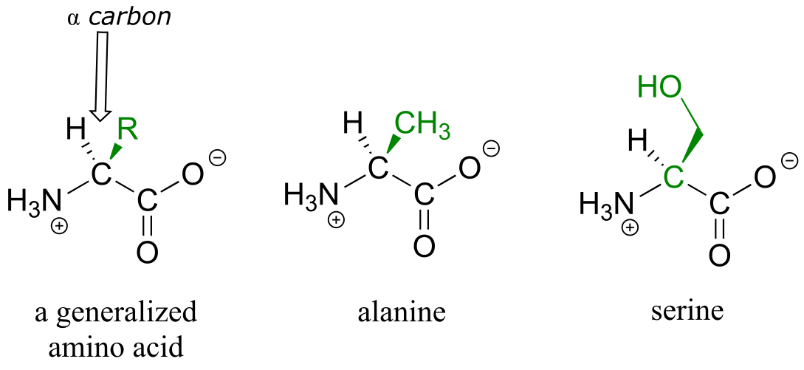fig 63
There are twenty different side chains in naturally occurring amino acids (see Table 5 in the tables section at the back of this book), and it is the identity of the side chain that determines the identity of the amino acid: for example, if the side chain is a -CH3 group, the amino acid is alanine, and if the side chain is a -CH2OH group, the amino acid is serine. Many amino acid side chains contain a functional group (the side chain of serine, for example, contains a primary alcohol), while others, like alanine, lack a functional group, and contain only a simple alkane.
The two ‘hooks’ on an amino acid monomer are the amine and carboxylate groups. Proteins (polymers of ~50 amino acids or more) and peptides (shorter polymers) are formed when the amino group of one amino acid monomer reacts with the carboxylate carbon of another amino acid to form an amide linkage, which in protein terminology is a peptide bond. Which amino acids are linked, and in what order - the protein sequence - is what distinguishes one protein from another, and is coded for by an organism’s DNA. Protein sequences are written in the amino terminal (N-terminal) to carboxylate terminal (C-terminal) direction, with either three-letter or single-letter abbreviations for the amino acids (see table 5). Below is a four amino acid peptide with the sequence “cysteine - histidine - glutamate - methionine”. Using the single-letter code, the sequence is abbreviated CHEM.
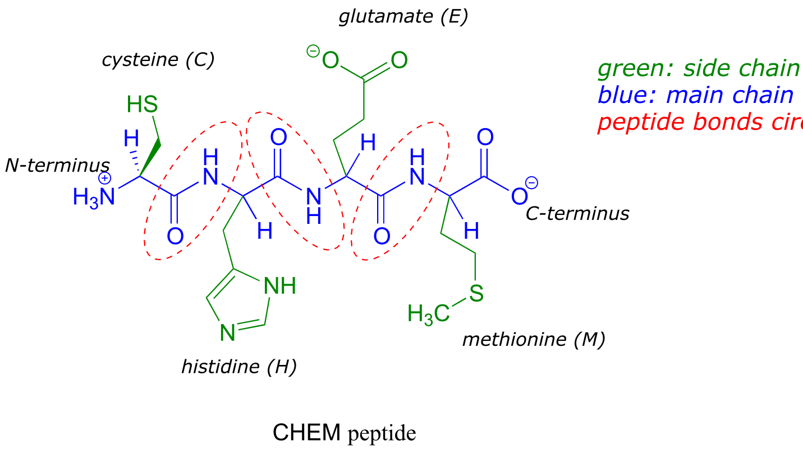fig 64
When an amino acid is incorporated into a protein it loses a molecule of water and what remains is called a residue of the original amino acid. Thus we might refer to the ‘glutamate residue’ at position 3 of the CHEM peptide above.
Once a protein polymer is constructed, it in many cases folds up very specifically into a three-dimensional structure, which often includes one or more ‘binding pockets’ in which other molecules can be bound. It is this shape of this folded structure, and the precise arrangement of the functional groups within the structure (especially around the binding pocket) that determines the function of the protein.
Enzymes are proteins which catalyze biochemical reactions. One or more reacting molecules–often called substrates–become bound in the active site pocket of an enzyme, where the actual reaction takes place. Receptors are proteins that bind specifically to one or more molecules–referred to as ligands–to initiate a biochemical process. For example, we saw in the introduction to this chapter that the TrpVI receptor in mammalian tissues binds capsaicin (from hot chili peppers) in its binding pocket and initiates a heat/pain signal which is sent to the brain.
Shown below is an image of the glycolytic enzyme fructose-1,6-bisphosphate aldolase (in grey), with the substrate molecule bound inside the active site pocket.

x-ray crystallographic data are from Protein Science 1999, 8, 291; pdb code 4ALD. Image produced with JMol First Glance
1.3E: Nucleic Acids (DNA and RNA)#
Deoxyribonucleic acid (DNA) and ribonucleic acid (RNA) are polymers composed of monomers called nucleotides. An RNA nucleotide consists of a five-carbon sugar phosphate linked to one of four nucleic acid bases: guanine (G), cytosine (C), adenine (A) and uracil (U).

fig 65a
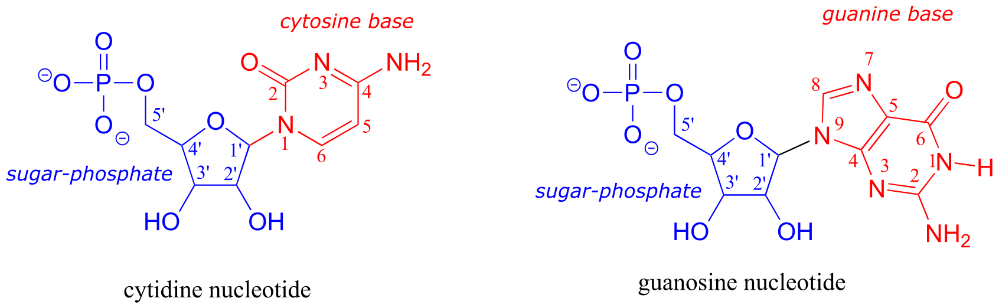fig 65
In a DNA nucleototide, the sugar is missing the hydroxyl group at the 2’ position, and the thymine base (T) is used instead of uracil. (The conventional numbering system used for DNA and RNA is shown here for reference - the prime (’) symbol is used to distinguish the sugar carbon numbers from the base carbon numbers.)
The two ‘hooks’ on the RNA or DNA monomer are the 5’ phosphate and the 3’ hydroxyl on the sugar, which in DNA polymer synthesis are linked by a ‘phosphate diester’ group.
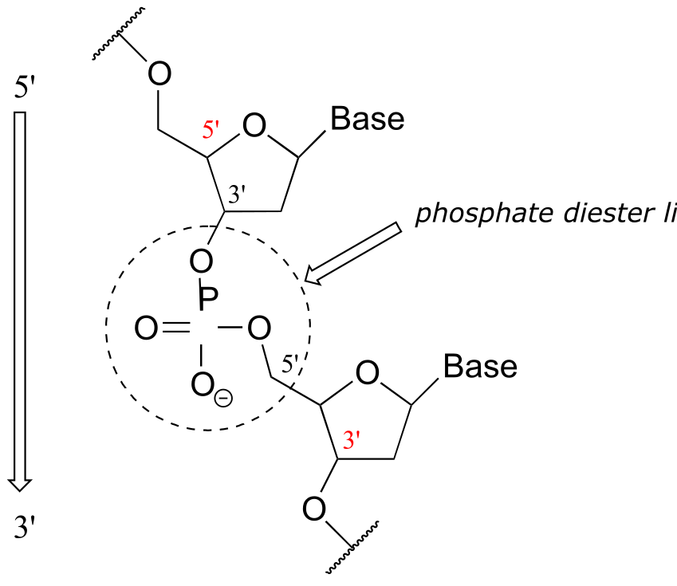fig 66
In the polymerization process, individual nucleotides are successively added to the 3’ hydroxyl group of a growing polymer: in other words, DNA and RNA synthesis occurs in the 5’ to 3’ direction, and conventionally this is the order in which sequences are written.
A DNA polynucleotide (often referred to as single-stranded DNA) combines with a complementary strand to form the famous Watson-Crick double-helix structure of double-stranded DNA (see image link at end of chapter). RNA can also form a double helix within a variety of single- and double-stranded structures depending on its function. Further discussion of higher-order polysaccharide, protein, and DNA/RNA structure is beyond the scope of this textbook, but you will learn many more details in biochemistry and molecular biology courses. All references to these biomolecules in this textbook will focus on organic chemistry details at the monomer and linking group level.
Summary of Key Concepts#
Before you move on to the next chapter, you should:
Thoroughly review (from your General Chemistry course) the fundamental principles of atomic structure and electron configuration, and review the rules for drawing Lewis structures.
Be very familiar with the common bonding patterns in organic molecules - you should be able to quickly recognize where lone pairs exist, even when they are not drawn explicitly, and you should be able to readily recognize incorrectly drawn structures -for example, when carbon is drawn with five bonds.
Be able to determine the formal charge on all atoms of a compound - with practice, you should be able to look at an organic structure and very rapidly recognize when there is a formal charge on a carbon, oxygen, or nitrogen.
Become adept at interpreting and drawing line structures for organic molecules (line structures will be used almost exclusively for the remainder of this textbook). A good test is to determine the molecular formula of a molecule from a line structure.
Understand the meaning of constitutional isomer, and be able to recognize and/or draw constitutional isomers of a given compound.
Be able to recognize and come up with your own examples of the most important functional groups in organic chemistry, introduced in this chapter and summarized in table 9 in the tables section at the back of this book.
Be familiar with the basic rules of the IUPAC nomenclature system, at the level presented in this textbook, and be able to draw a structure based on its IUPAC name.
Understand how and when to use abbreviated organic structures appropriately.
You need not memorize in detail the structures of common classes of biological molecules illustrated in this chapter (fats, isoprenoids, carbohydrates, proteins, and nucleic acids), but you should be able to recognize examples when you see them. Also, you should be prepared to refer to section 1.3 when references are made to these structures throughout the rest of this textbook and you need a review.
As always, you should be familiar with the meaning of all of the terms written in bold in this chapter.
Problems#
P1.1: The figure below illustrates a section of an intermediate compound that forms during the protein synthesis process in the cell. Lone pairs are not shown, as is typical in drawings of organic compounds.
a) The structure as drawn is incomplete, because it is missing formal charges - fill them in.
b) How many hydrogen atoms are on this structure?
c) Identify the two important biomolecule classes (covered in section 1.3) in the structure.
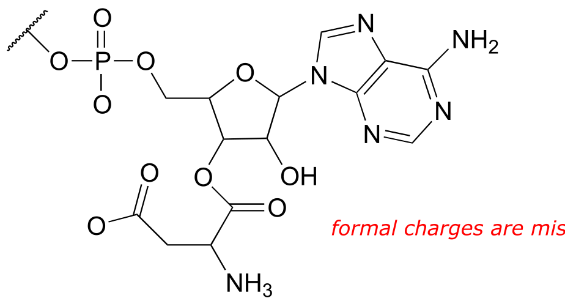P1.2: Find, in Table 6 (‘Structures of common coenzymes’, in the tables section at the back of this book), examples of the following:
a) a thiol b) an amide c) a secondary alcohol d) an aldehyde
e) a methyl substituent on a ring f) a primary ammonium ion
g) a phosphate anhydride h) a phosphate ester
P1.3: Draw line structures corresponding to the following compounds. Show all lone pair electrons (and don’t forget that non-zero formal charges are part of a correctly drawn structure!)
a) 2,2,4-trimethylpentane b) 3-phenyl-2-propenal
c) 6-methyl-2,5-cyclohexadienone d) 3-methylbutanenitrile
e) 2,6-dimethyldecane f) 2,2,5,5-tetramethyl-3-hexanol
g) methyl butanoate h) N-ethylhexanamide
i) 7-fluoroheptanoate j) 1-ethyl-3,3-dimethylcyclohexene
P1.4: Reaction A below is part of the biosynthetic pathway for the amino acid methionine, and reaction B is part of the pentose phosphate pathway of sugar metabolism.
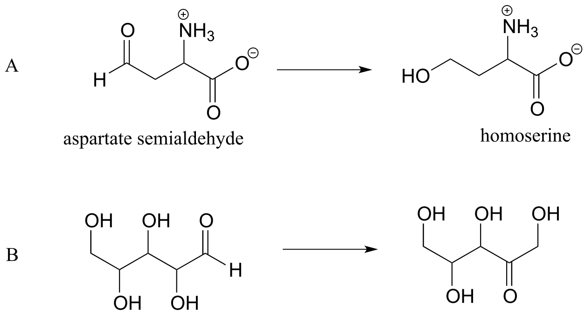a) What is the functional group transformation that is taking place in each reaction?
b) Keeping in mind that the ‘R’ abbreviation is often used to denote parts of a larger molecule which are not the focus of a particular process, which of the following abbreviated structures could be appropriate to use for aspartate semialdehyde when drawing out details of reaction A?

c) Again using the ‘R’ convention, suggest an appropriate abbreviation for the reactant in reaction B.
P1.5: Find, in the table of amino acid structures (Table 5), examples of the following:
a) a secondary alcohol b) an amide c) a thiol
d) a sulfide e) a phenol f) a side chain primary ammonium
g) a side chain carboxylate h) a secondary amine
P1.6: Draw correct Lewis structures for ozone (O3), azide ion, (N3-), and bicarbonate ion, HCO3-. Include lone pair electrons and formal charges, and use your General Chemistry textbook to review VSEPR theory, which will enable you to draw correct bond geometries.
P1.7: Draw one example each of compounds fitting the descriptions below, using line structures. Be sure to include all non-zero formal charges. All atoms should fit one of the common bonding patters discussed in this chapter. There are many possible correct answers - be sure to check your drawings with your instructor or tutor.
a) an 8-carbon molecule with secondary alcohol, primary amine, amide, and cis-alkene groups
b) a 12-carbon molecule with carboxylate, diphosphate, and lactone (cyclic ester) groups.
c) a 9-carbon molecule with cyclopentane, alkene, ether, and aldehyde groups
P1.8: Three of the four structures below are missing formal charges.
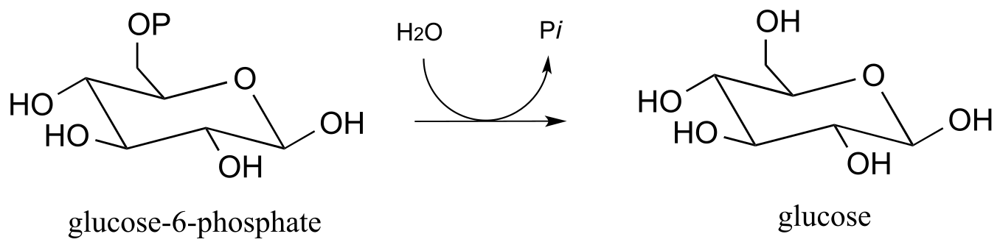a) Fill in all missing formal charges (assume all atoms have a complete octet of valence electrons).
b) Identify the following functional groups or structural elements (there may be more than one of each): carboxylate, carboxylic acid, cyclopropyl, amide, ketone, secondary ammonium ion, tertiary alcohol.
c) Determine the number of hydrogen atoms in each compound.
P1.9:
a) Draw four constitutional isomers with the molecular formula C4H8. (
b) Draw two open-chain (non-cyclic) constitutional isomers of cyclohexanol (there are more than two possible answers).
P1.10: Draw structures of four different amides with molecular formula C3H7NO.